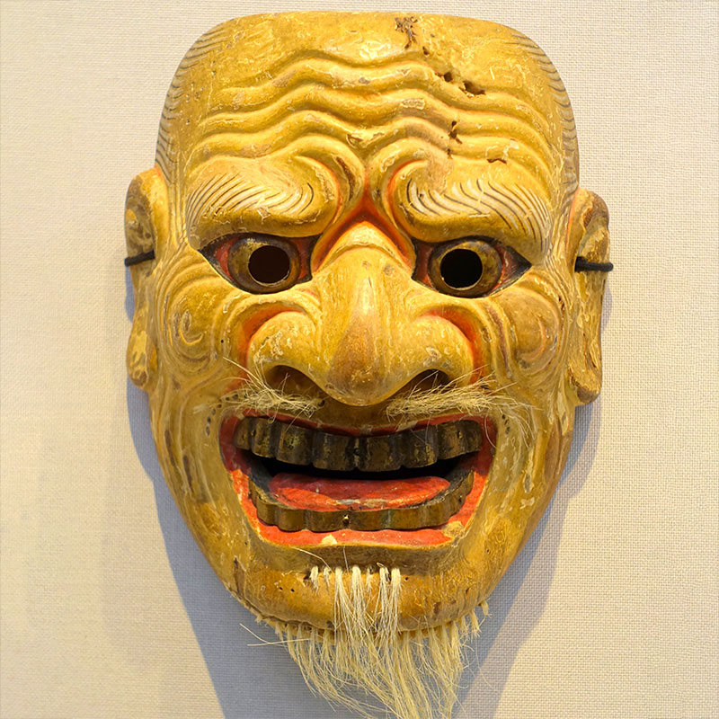

Des chiffres qui représentent autre chose.
Par exemple: les nombres dans une horloge représentent des quantités de temps (minutes, heures).
Le plus grand nombre que vous pouvez trouver.
Quelque chose de la nature avec une forme très géométrique.
Une fleur, une plante, un fruit, un légume, une pierre, etc.
Une construction très géométrique.
Un bâtiment, une sculpture, un pont, une arche, une porte, une fenêtre ou d'autres choses construites par des humains.
Une œuvre d'art qui utilise des formes géométriques intéressantes.
Un groupe de choses trop grand pour être compté.
Une chose dont la forme est faite de surfaces planes et de bords droits, sans courbes.
Une chose dont la forme n'est faite que de surfaces courbes

Quelque chose que vous imaginez nécessitant des mesures très précises ou des calculs complexes à construire.
Cercles à l'intérieur d'autres cercles.
Autant de carrés ou de rectangles que vous pouvez faire tenir dans la même image.
Le polygone avec le plus grand nombre de côtés que vous pouvez trouver.
Un polygone est une forme plane fermée dont tous les côtés sont des segments.
Un cercle imparfait.
Quelque chose qui est presque parfaitement circulaire, mais pas tout à fait.
Un triangle caché.
Un triangle formé par les bords d'objets ou encore dans l'espace entre des objets et qui n'est visible que d'une position et d'une direction particulières.
Un patron réalisé en plaçant des formes géométriques les unes à côté des autres, sans espace.
Par exemple, des carreaux géométriques au sol ou sur le mur.
Objets ou formes disposés dans un patron coloré et symétrique.
Semblable à un kaléidoscope, une fleur géométrique ou les ailes d'un papillon.
Un groupe de choses dont la couleur, la taille ou la forme suit un motif répétitif.
Un groupe de choses similaires qui sont apparemment distribuées au hasard, sans aucune règle.
Un groupe de choses similaires, classées par taille.
Un objet qui serait un toboggan très rapide et excitant si vous pouviez rapetisser votre corps.